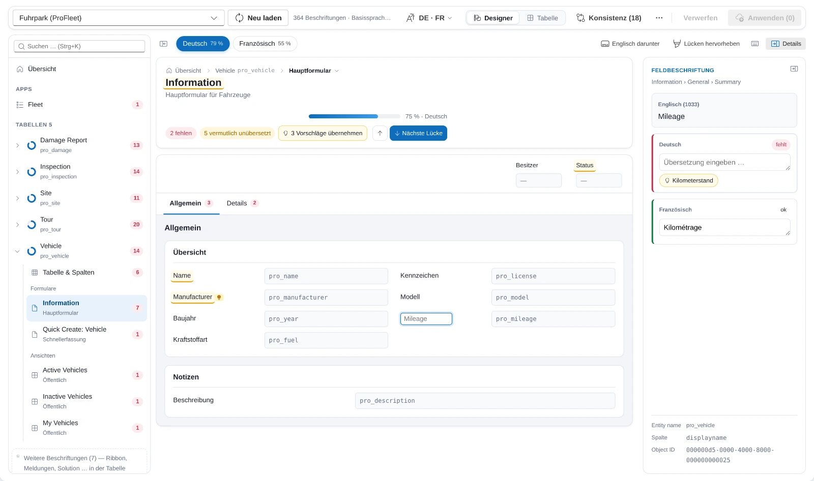
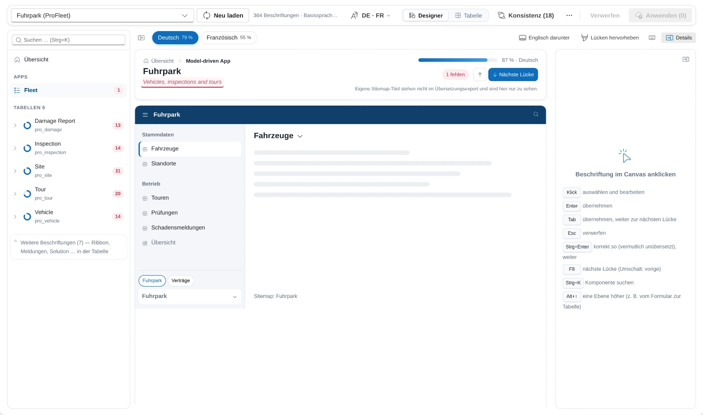

Am 3. Oktober stand hier, dass der erste Lauf gegen die Umgebung mit drei Sprachen ansteht. Er fand am selben Abend statt, beim Kunden aus der Lichtindustrie, in der Entwicklungsumgebung. Die Lückenmatrix tat, was sie sollte, und trotzdem war die erste Rückmeldung keine zur Matrix. Wer dort übersetzt, kennt die Formulare seiner Anwender und sucht in einer Liste mit Typ, Komponente und Spalte nach dem Feld, das er meint. Übersetzer denken in Formularen, nicht in Zeilen. Die Matrix ist eine Tabellenkalkulation mit besseren Filtern, und genau das wollte niemand mehr bedienen.

Was die Umgebung zuerst zeigte
Vor dem Designer kam die Ernüchterung. Drei Annahmen aus der ersten Fassung hielten dem ersten Kontakt nicht stand. Die Export-Aktion ist an die Solution-Collection gebunden, und die Kommandozeile von Power Apps kann für so eine Aktion keinen Client erzeugen; über den Konnektor lief der Aufruf in den Timeout. Die App trägt die native Aktion seitdem selbst in ihre Datenquellen ein, und derselbe Weg dient später den Metadaten-Abfragen für die Auswahlwerte. Das Dateiformat hatte ich am Beispiel aus der Dokumentation nachgebaut; im echten Export steht unter „Entity name" der logische Tabellenname, und ob eine Zeile ein Formular, eine Ansicht oder eine Spalte ist, folgt aus der Spalte „Object Column Name". Geprüft an zwei echten Exporten, danach Zuordnung, Namensauflösung und Testdaten umgestellt. Und die Zeit: Der Export der Kern-Solution des Kunden dauerte in der App zwischen 2:16 und 2:52 Minuten, bei einer Grenze von drei Minuten je Aufruf. Seitdem zeigt das Laden eine Fortschrittskarte mit Schritten, Laufzeit und einem Balken gegen die letzte Exportdauer derselben Solution, dazu einen Knopf, mit dem man das Warten abbricht, ohne die App zu verlassen.
Übersetzer denken in Formularen, nicht in Zeilen.
So, wie die Nutzer es sehen
Der Designer ist seit dem 3. Oktober die Standardansicht nach dem Laden, die Tabelle liegt einen Umschalter weiter. Links die Komponenten der Solution: Apps, Tabellen mit ihren Formularen und Ansichten, Dashboards, je Eintrag ein Ring für den Anteil übersetzt und eine rote Zahl für das, was offen ist. In der Mitte die gewählte Komponente, gebaut aus dem, was die Umgebung live hergibt: ein Formular aus seinem formxml mit Kopfzeile, Registerkarten, Abschnitten und Feldern, eine Ansicht aus ihrem layoutxml mit den Spaltenköpfen, eine Model-driven App aus ihrer Sitemap mit Bereichen und Gruppen. Die Texte darin kommen aus der Exportdatei, und genau dorthin schreibt der Designer auch: dieselbe Änderungsliste, derselbe Import wie aus der Tabelle. Am Weg über Export und Import hat sich nichts geändert, nur an dem, was man dabei sieht.
Übersetzen heißt dann: anklicken, tippen, Enter. Tab übernimmt und springt zur nächsten Lücke, auch über Registerkarten hinweg. Strg+Enter sagt „korrekt so" für die Fälle, in denen das deutsche Wort dem englischen gleicht. Steht derselbe Basistext anderswo schon übersetzt, hängt eine Glühbirne am Feld, und der Kopf der Seite bietet an, alle Vorschläge dieser Seite auf einmal zu übernehmen. Rechts zeigen die Details die gewählte Beschriftung in allen Zielsprachen nebeneinander; wer sie nicht braucht, blendet sie aus und bekommt die Breite für das Formular. Das war die erste Korrektur nach dem ersten Blick: Mit fest eingeblendeten Details quetschte sich ein echtes Formular in drei schmale Spalten, und die Feldnamen brachen mitten im Wort.

Die rot gestrichelte Linie ist die Grenze, die ich am liebsten nicht hätte. Titel von Sitemap-Bereichen und eigene Formulartexte, die vom Spaltennamen abweichen, enthält der Übersetzungsexport nicht. Der Designer zeigt sie, damit das Bild vollständig ist, und schreibt sie nicht, weil der Import sie nicht kennt. Dafür bräuchte es einen zweiten Schreibweg direkt auf die Sitemap, und ob ich den will, ist offen. Bis dahin steht am Kopf der Seite, dass man diese Titel im App-Designer pflegt.
Was die großen Zahlen mit dem Designer machten
Die erste Fassung rechnete nach jedem Tastendruck Zustände, Zähler und Glossar-Vorschläge über alle Zeilen neu, bei 60.000 Zeilen rund 280 Millisekunden, und zeichnete danach jede Beschriftung neu. Das merkt man an einem Formular mit zwanzig Feldern nicht und an einer Tabelle mit 260 Spalten sehr. Seit dem 4. Oktober rechnet die App nur noch die geänderten Zeilen und ihre Glossar-Gruppe nach, mit einem Test, der das Ergebnis gegen die volle Rechnung hält. Der Designer baut seine Struktur einmal aus der geladenen Datei; Texte und Zustände laufen über einen eigenen Speicher, und eine Änderung zeichnet nur die Beschriftungen und Zähler neu, die sie betrifft.
Dann der Test mit der Kern-Solution des Kunden: 228 Tabellen, 701 Formulare, 1.726 Ansichten, 8 Apps, 10 Dashboards. 29 Vorschläge auf einmal übernehmen und wieder verwerfen dauert unter einer Sekunde. Was die echten Daten sonst zeigten, stand in keinem Mock. Solution-Namen, die in der Auswahl über drei Zeilen umbrachen. Eine Tabelle mit über 80 Formularen und Ansichten, deren Kacheln die Spalten nach unten schoben; jetzt stehen die mit offenen Beschriftungen zuerst, der Rest hinter „Alle anzeigen". Ein Nachbar-Menü im Navigationspfad, das länger war als der Bildschirm. Und die Sales Hub zeigte „keine Sitemap", weil der eindeutige Name der App nicht der ihrer Sitemap ist; die Zuordnung läuft seitdem über die App-Komponenten, die Namensgleichheit ist nur noch der Ersatzweg. Der Navigationspfad selbst war übrigens eine Folge des Ausblendens: Wer die Komponentenliste zuklappte und aus einer Tabelle in ein Formular ging, hatte keinen Weg zurück.
Der erste Import
Am Abend des 4. Oktober lief der erste echte Import, in einer Kopie der Entwicklungsumgebung. Der Importjob brauchte fünf Minuten, von 21:51 bis 21:56 Uhr, und war erfolgreich. Der Dialog zeigte trotzdem ein rotes Kreuz. Der Aufruf von ImportTranslation ist synchron, und die Plattform bricht ihn nach 180 Sekunden ab, während Dataverse den Job weiterlaufen lässt. Die App hatte den Aufruf für das Ergebnis genommen. Seitdem entscheidet der Job: Ein Fehler des Aufrufs bei erfolgreichem Job ist ein Hinweis im Ergebnis, ein Timeout beim Veröffentlichen heißt „läuft vermutlich weiter", und erst wenn eine Minute nach dem Aufruf kein Job sichtbar ist, gilt der Import als nicht gestartet. Sauberer wäre die asynchrone Variante der Aktion, die steht auf der Liste.
Die Zahl, die ich im ersten Beitrag versprochen habe, wie viele Lücken eine gewachsene Umgebung hat, steht noch aus. Der Lauf bisher war ein Testlauf in einer Kopie, und eine Kennzahl aus einer Kopie gebe ich nicht als Befund aus. Sie kommt mit dem ersten Durchgang in der Umgebung, in der die Fachabteilung übersetzt. Matrix, CSV-Weg und Import beschreibt die Produktseite.